D01 / Quest header
Text and replay only. Never show a cat picture beside the quest.
images/details/D01_quest_header.pngText and replay only. Never show a cat picture beside the quest.
images/details/D01_quest_header.png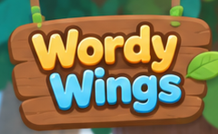
Keep small. Optional on compact mobile screens.
images/details/D02_brand_logo.png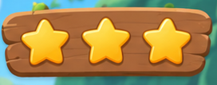
Start at 3. Wrong quiz answer: minus 1, minimum 0. Exploration is free.
images/details/D03_stars_counter.pngPause gameplay, audio and reveal timers; resume the same state.
images/details/D04_pause_button.png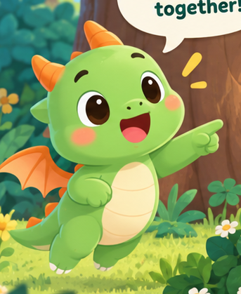
Supportive reactions. Do not point to the target hiding spot.
images/details/D05_momo_guide.png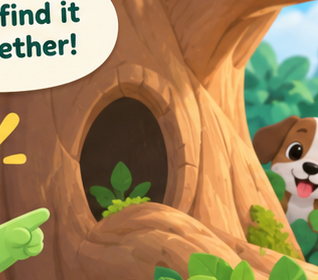
Cover the opening in the initial state. No eye, ear or silhouette leakage.
images/details/D06_tree_hollow.png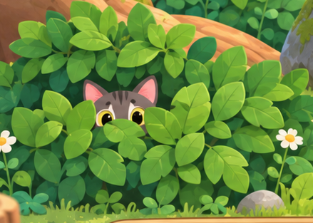
This source excerpt is POST-REVEAL. The cat must be invisible before reveal.
images/details/D07_front_bush.png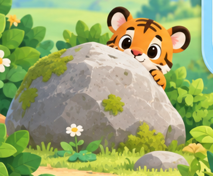
The tiger is visible in this concept only. Runtime starts fully covered.
images/details/D08_rock_hiding_spot.png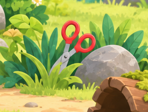
Scissors are a distractor. Show their full recognizable silhouette after reveal.
images/details/D09_tall_grass.png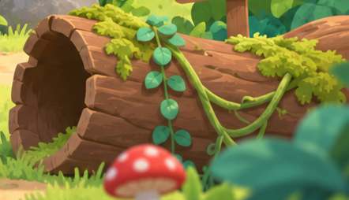
Alternative hiding spot. The log itself is not a quiz answer.
images/details/D10_hollow_log.png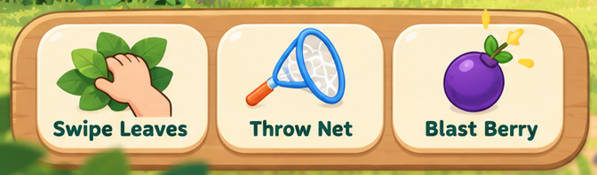
Three reusable tools; no ammunition, purchases or cooldown penalty.
images/details/D11_tool_tray.png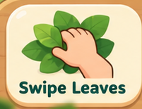
Drag a leaf cover sideways, or use the accessible tap-to-open alternative.
images/details/D12_tool_swipe.png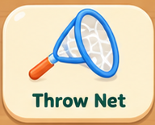
Lift foliage with the net. Do not trap, tighten around or injure an animal.
images/details/D13_tool_net.png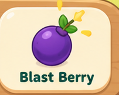
A magical foam berry breaks the rock cover only; no realistic explosive effect.
images/details/D14_tool_berry.png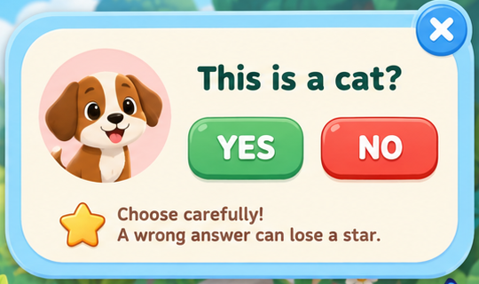
Correct source copy to: Is this a cat? Remove the close button while unanswered.
images/details/D15_quiz_panel_reference.pngAllowed only after opening its hiding spot. Do not name the dog before answering.
images/details/D16_dog_portrait.pngBoth choices must be equally prominent. Colour is not an answer hint.
images/details/D17_yes_button.pngFor a dog in Find a cat: NO is correct, but does NOT complete the level.
images/details/D18_no_button.png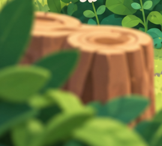
Decorative, not an invisible interactive obstacle.
images/details/D19_foreground_stump.png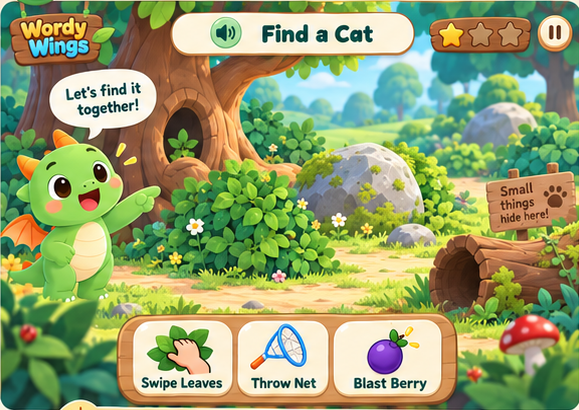
Closest source to SEARCH state. Correct the source star count to 3 / 3.
images/details/D20_initial_scene_board.png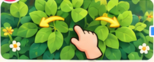
Keep all occupants hidden until the reveal threshold is reached.
images/details/D21_leaves_before.pngReveal one object, then ask the yes / no question.
images/details/D22_leaves_after.png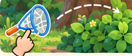
Tap tool, then tap bush. Decorative arc; a motor miss never loses a star.
images/details/D23_net_throw.png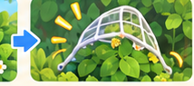
Lift cover, dissolve net, THEN show the occupant.
images/details/D24_net_lift.png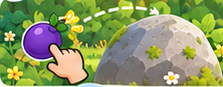
Valid rocks only. Unsupported spots gently bounce, with no penalty.
images/details/D25_berry_aim.png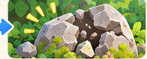
Debris moves away from the concealed space, then fades before reveal.
images/details/D26_rock_opened.png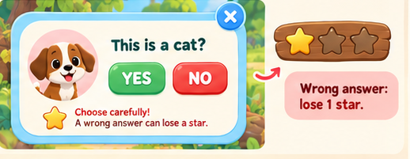
Charge once per reveal; never once per frame, click listener or retry request.
images/details/D27_wrong_answer_board.png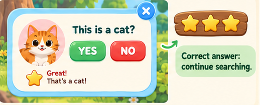
Source text is WRONG here: cat + YES must complete the level, not continue searching.
images/details/D28_right_answer_board.png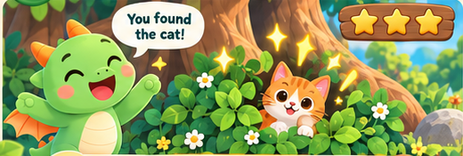
Momo greets the found cat. Keep the current remaining stars; do not refill to 3.
images/details/D29_success_scene.png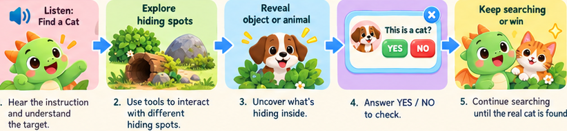
Listen -> search -> reveal -> verify -> continue OR finish.
images/details/D30_flow_strip.pngOne neutral reveal cue for every object; no correctness cue before an answer.
images/details/D31_dog_world_reveal.png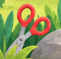
For this level: Is this a cat? NO. If scissors are the target: Are these scissors?
images/details/D32_scissors_world_reveal.png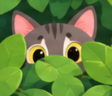
Only show after interaction. For Find a cat, YES leads to completion.
images/details/D33_cat_world_reveal.pngFriendly distractor, not a threat. NO correctly rejects it; continue searching.
images/details/D34_tiger_world_reveal.png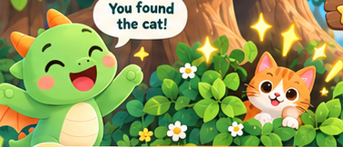
Reference for pose only; make separate character frames for animation.
images/details/D35_celebration_closeup.png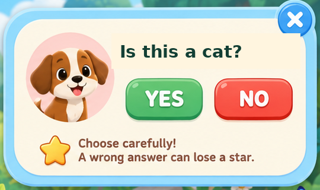
Exact heading replacement only. Remove source X button and warning copy in implementation; see visual spec.
images/details/D36_quiz_grammar_corrected.png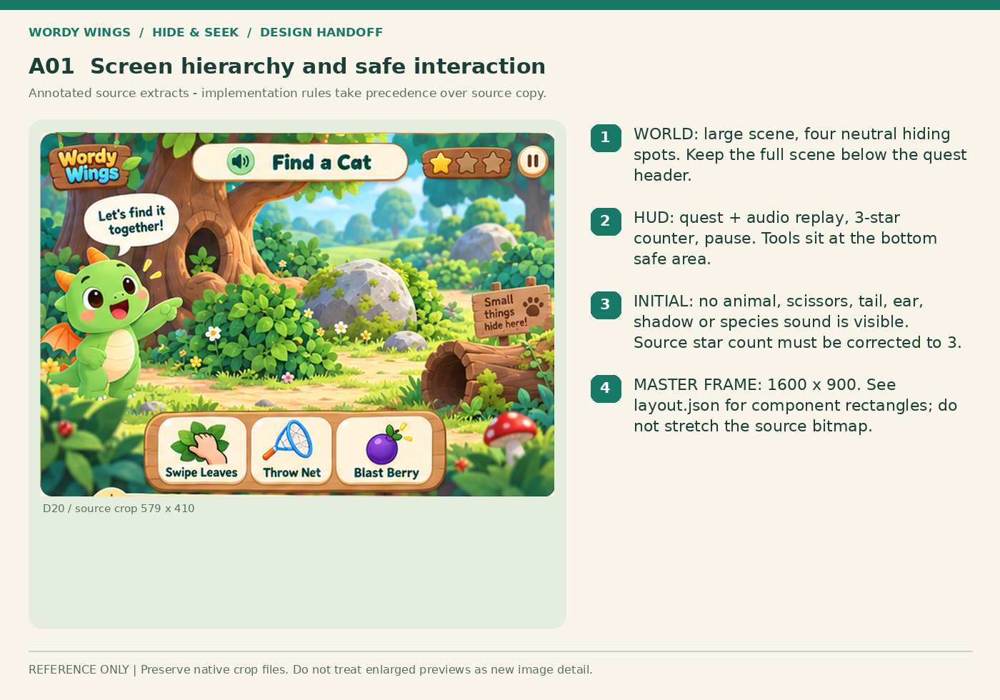
WORLD: large scene, four neutral hiding spots. Keep the full scene below the quest header. / HUD: quest + audio replay, 3-star counter, pause. Tools sit at the bottom safe area. / INITIAL: no animal, scissors, tail, ear, shadow or species sound is visible. Source star count must be corrected to 3. / MASTER FRAME: 1600 x 900. See layout.json for component rectangles; do not stretch the source bitmap.
images/annotated/A01.png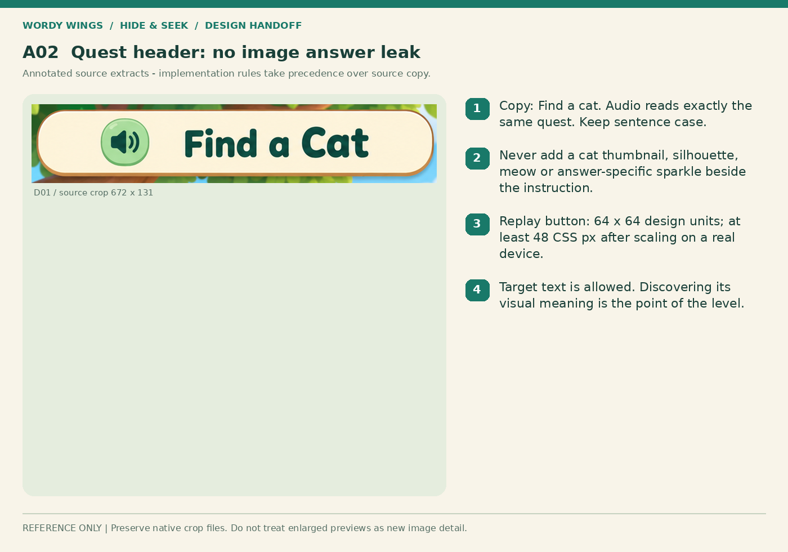
Copy: Find a cat. Audio reads exactly the same quest. Keep sentence case. / Never add a cat thumbnail, silhouette, meow or answer-specific sparkle beside the instruction. / Replay button: 64 x 64 design units; at least 48 CSS px after scaling on a real device. / Target text is allowed. Discovering its visual meaning is the point of the level.
images/annotated/A02.png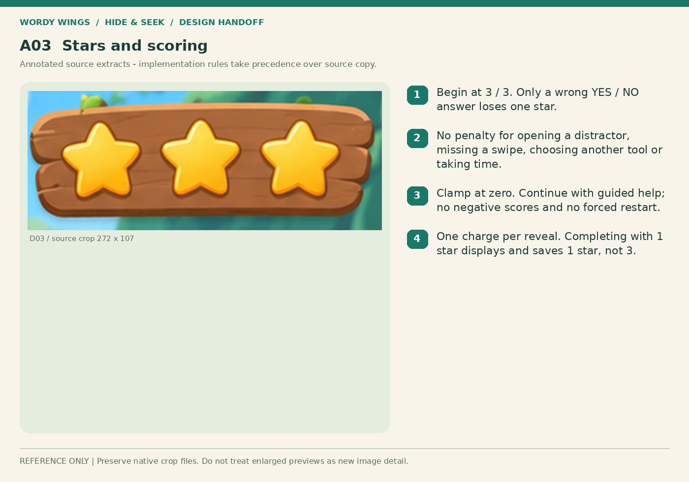
Begin at 3 / 3. Only a wrong YES / NO answer loses one star. / No penalty for opening a distractor, missing a swipe, choosing another tool or taking time. / Clamp at zero. Continue with guided help; no negative scores and no forced restart. / One charge per reveal. Completing with 1 star displays and saves 1 star, not 3.
images/annotated/A03.png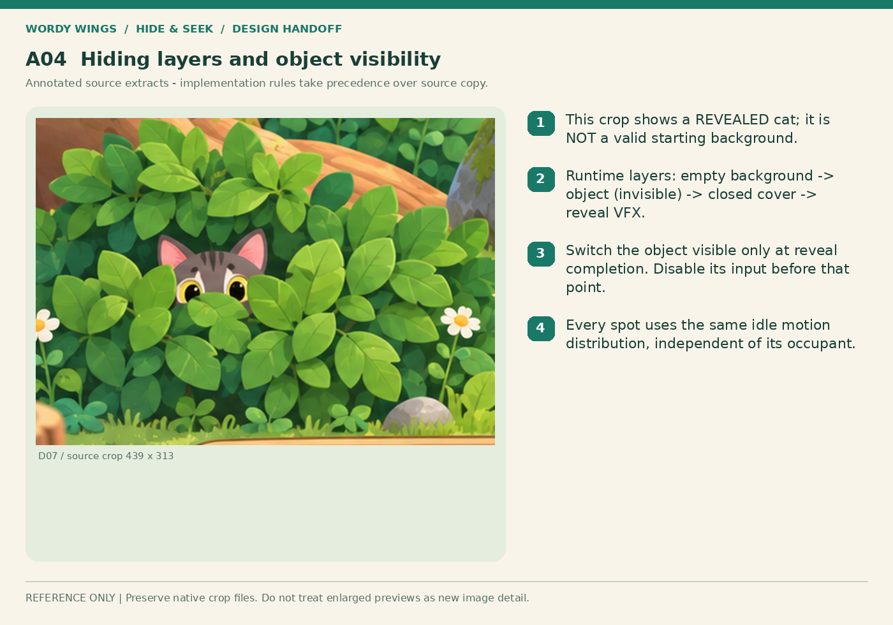
This crop shows a REVEALED cat; it is NOT a valid starting background. / Runtime layers: empty background -> object (invisible) -> closed cover -> reveal VFX. / Switch the object visible only at reveal completion. Disable its input before that point. / Every spot uses the same idle motion distribution, independent of its occupant.
images/annotated/A04.png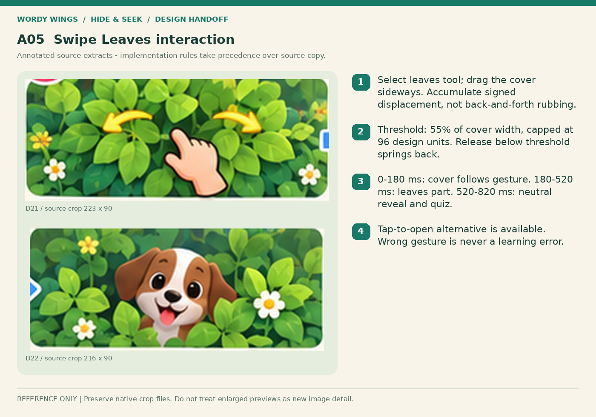
Select leaves tool; drag the cover sideways. Accumulate signed displacement, not back-and-forth rubbing. / Threshold: 55% of cover width, capped at 96 design units. Release below threshold springs back. / 0-180 ms: cover follows gesture. 180-520 ms: leaves part. 520-820 ms: neutral reveal and quiz. / Tap-to-open alternative is available. Wrong gesture is never a learning error.
images/annotated/A05.png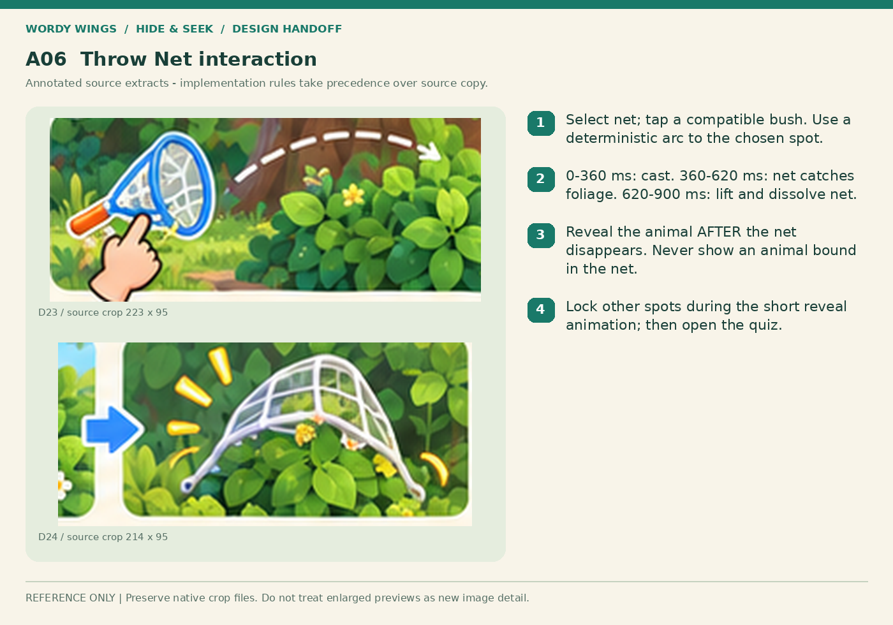
Select net; tap a compatible bush. Use a deterministic arc to the chosen spot. / 0-360 ms: cast. 360-620 ms: net catches foliage. 620-900 ms: lift and dissolve net. / Reveal the animal AFTER the net disappears. Never show an animal bound in the net. / Lock other spots during the short reveal animation; then open the quiz.
images/annotated/A06.png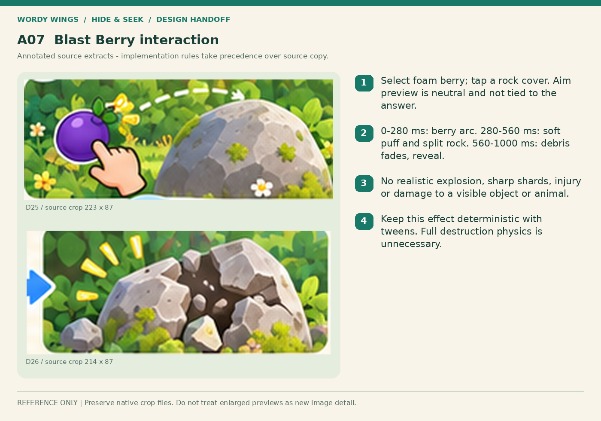
Select foam berry; tap a rock cover. Aim preview is neutral and not tied to the answer. / 0-280 ms: berry arc. 280-560 ms: soft puff and split rock. 560-1000 ms: debris fades, reveal. / No realistic explosion, sharp shards, injury or damage to a visible object or animal. / Keep this effect deterministic with tweens. Full destruction physics is unnecessary.
images/annotated/A07.png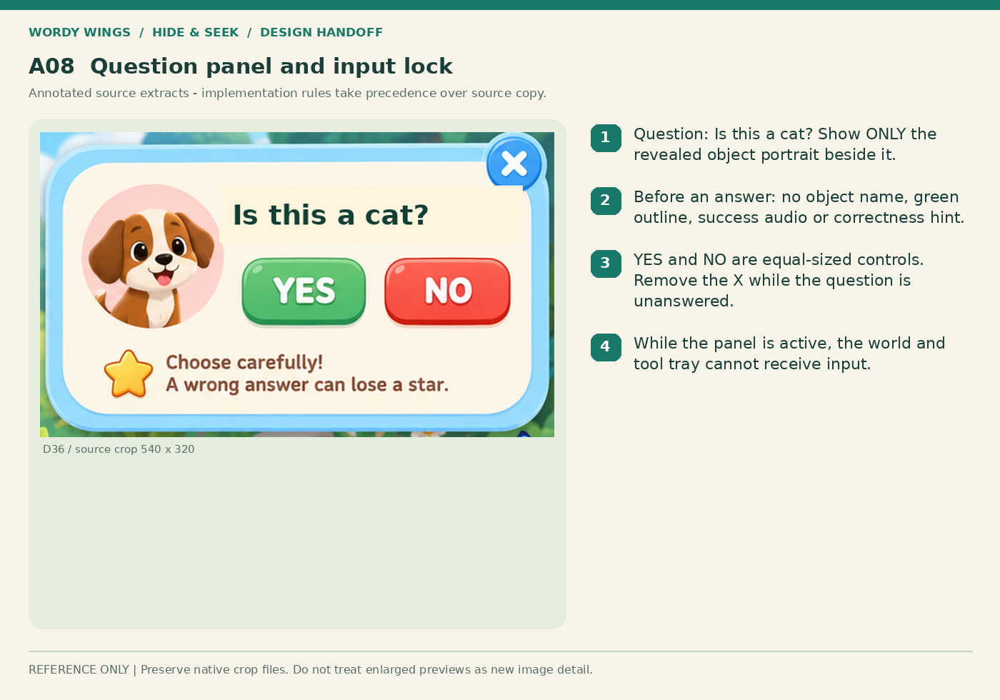
Question: Is this a cat? Show ONLY the revealed object portrait beside it. / Before an answer: no object name, green outline, success audio or correctness hint. / YES and NO are equal-sized controls. Remove the X while the question is unanswered. / While the panel is active, the world and tool tray cannot receive input.
images/annotated/A08.png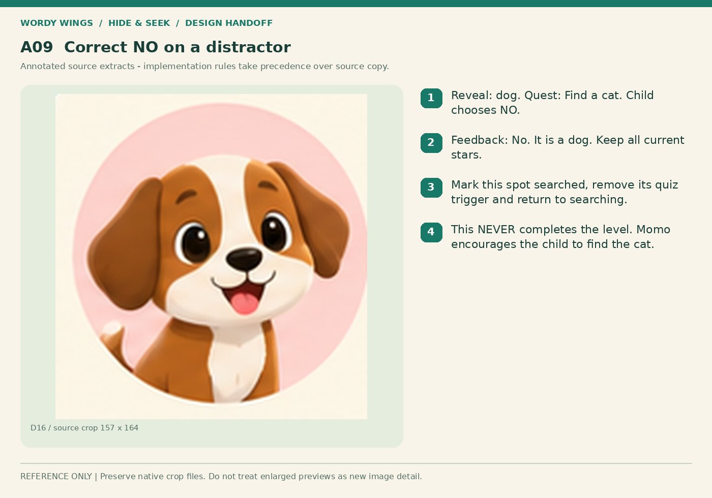
Reveal: dog. Quest: Find a cat. Child chooses NO. / Feedback: No. It is a dog. Keep all current stars. / Mark this spot searched, remove its quiz trigger and return to searching. / This NEVER completes the level. Momo encourages the child to find the cat.
images/annotated/A09.png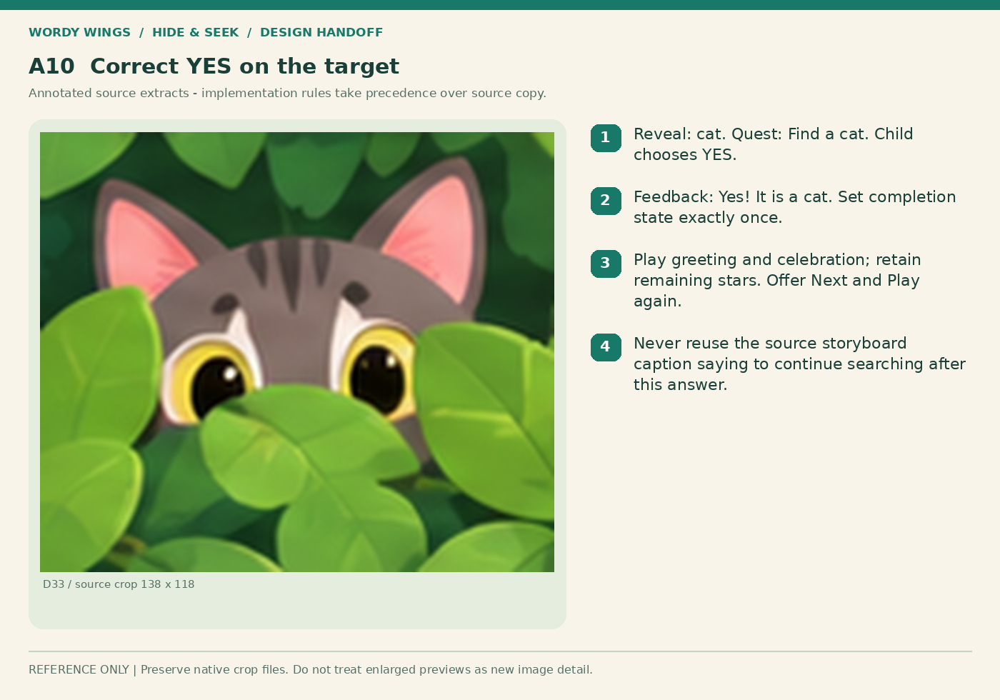
Reveal: cat. Quest: Find a cat. Child chooses YES. / Feedback: Yes! It is a cat. Set completion state exactly once. / Play greeting and celebration; retain remaining stars. Offer Next and Play again. / Never reuse the source storyboard caption saying to continue searching after this answer.
images/annotated/A10.png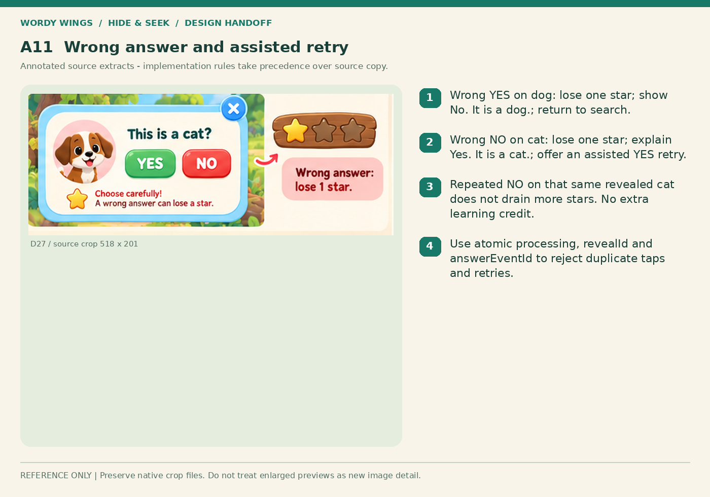
Wrong YES on dog: lose one star; show No. It is a dog.; return to search. / Wrong NO on cat: lose one star; explain Yes. It is a cat.; offer an assisted YES retry. / Repeated NO on that same revealed cat does not drain more stars. No extra learning credit. / Use atomic processing, revealId and answerEventId to reject duplicate taps and retries.
images/annotated/A11.png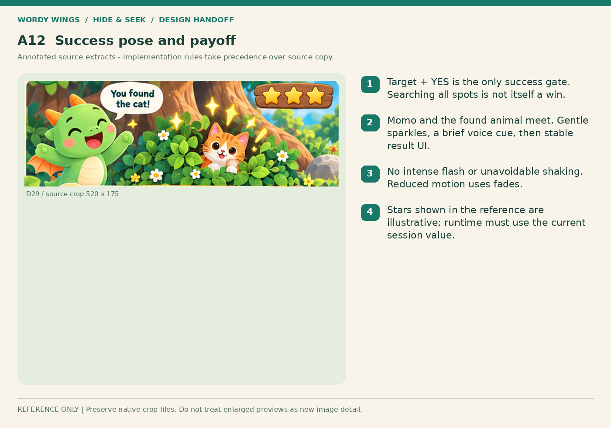
Target + YES is the only success gate. Searching all spots is not itself a win. / Momo and the found animal meet. Gentle sparkles, a brief voice cue, then stable result UI. / No intense flash or unavoidable shaking. Reduced motion uses fades. / Stars shown in the reference are illustrative; runtime must use the current session value.
images/annotated/A12.png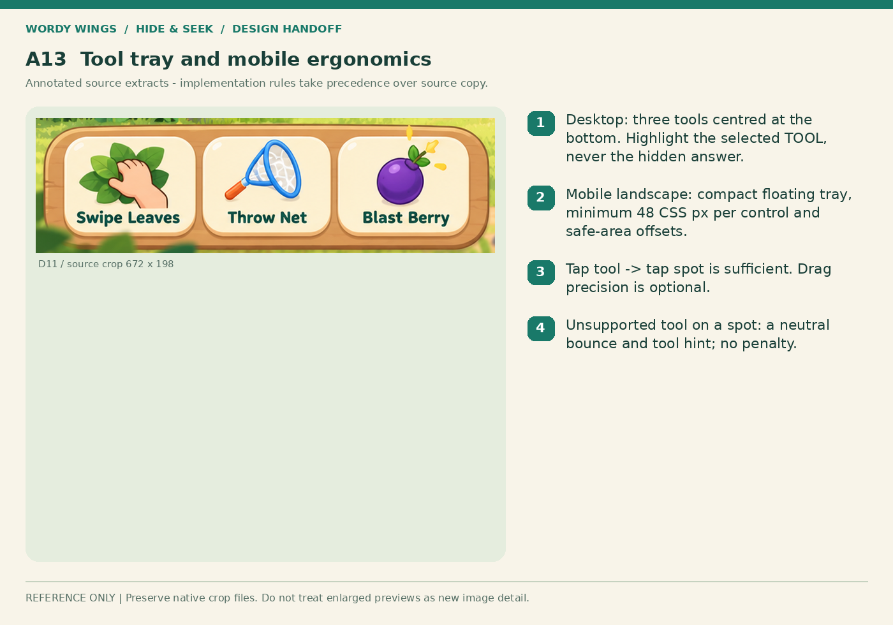
Desktop: three tools centred at the bottom. Highlight the selected TOOL, never the hidden answer. / Mobile landscape: compact floating tray, minimum 48 CSS px per control and safe-area offsets. / Tap tool -> tap spot is sufficient. Drag precision is optional. / Unsupported tool on a spot: a neutral bounce and tool hint; no penalty.
images/annotated/A13.png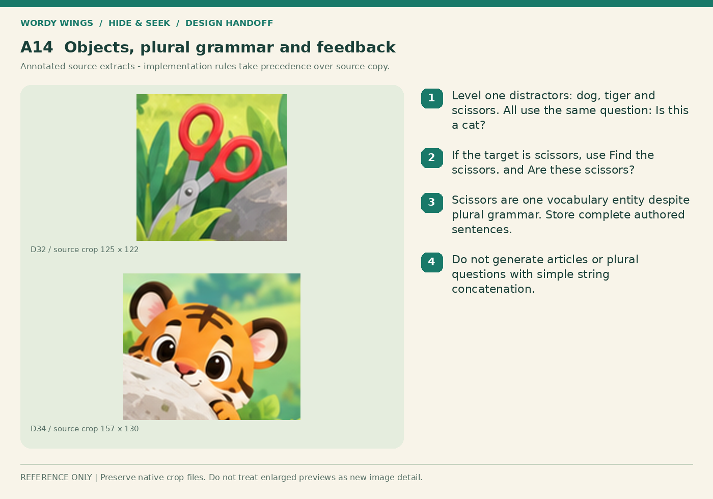
Level one distractors: dog, tiger and scissors. All use the same question: Is this a cat? / If the target is scissors, use Find the scissors. and Are these scissors? / Scissors are one vocabulary entity despite plural grammar. Store complete authored sentences. / Do not generate articles or plural questions with simple string concatenation.
images/annotated/A14.png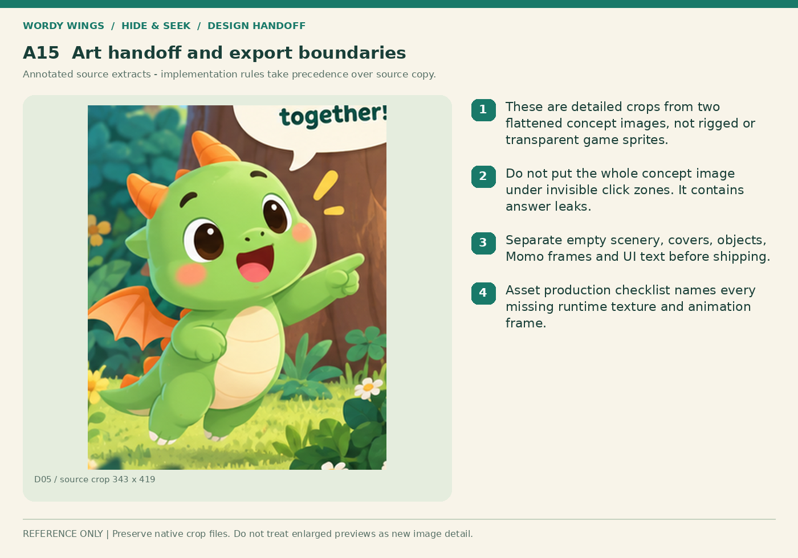
These are detailed crops from two flattened concept images, not rigged or transparent game sprites. / Do not put the whole concept image under invisible click zones. It contains answer leaks. / Separate empty scenery, covers, objects, Momo frames and UI text before shipping. / Asset production checklist names every missing runtime texture and animation frame.
images/annotated/A15.png